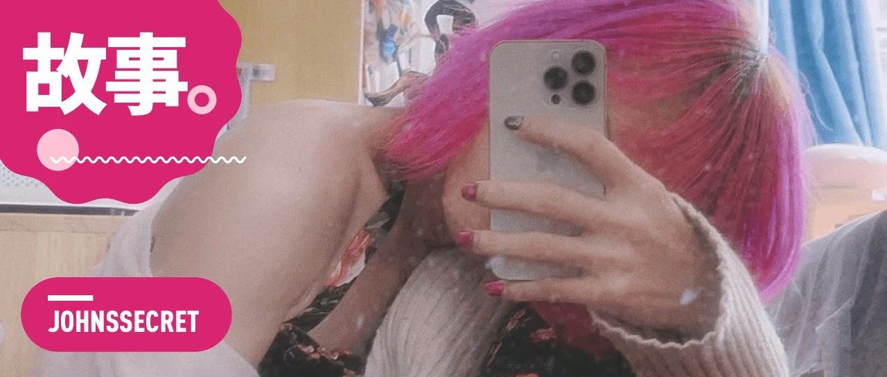

到底有多少人还得在春节装直男直女
原创
宛潼
约翰斯库
2023年01月21日 15:21
广东
除夕快乐，今天要说的事情以封面上的那张自拍开始。
这些年来，每当临近春节假期回家的那一刻，我总是会无数次幻想次这样一个画面：在某个并不寒冷的春节里，我可以在南方 25 度的气温下，穿着封面上那样的吊带和针织外套回到家，亲切地跟我爸妈打招呼。
但这也只能被我称之为「幻想」。真实世界中的我，却是在拖着行李箱走回家的同时，用力地抠着小拇指上最后一块闪光的玫粉色甲片。随着一阵剧烈的疼痛，终于在离家不到 10 米的小区绿道上，厚厚的甲片被我连带着血肉掀起。
妈妈在手机里问我还有多久到家，我忍着痛用冰冷的双手在屏幕上敲着，「快了，10 分钟内吧」。
我拖着行李箱折返出小区门口，在几家已经贴着暂停营业告示的便利店门前碰壁后，才找到了一家还在开门的杂货铺。我用一块钱买了张创可贴，小心地将血肉模糊的小拇指顶端缠起，拖着行李箱往回家的方向走。
这一次从杂货铺到家大概 100 米的距离，是我觉得这些年走过最艰难最漫长的路。
我不停地质问自己，凭什么我要这样生活，凭什么我不可以以自己喜欢的方式回家，而是要看别人喜不喜欢，那如果是这样我为什么要成为人。
一天之后，小拇指上的血液已经凝结成深褐色的痂，慢慢等待自我修复。我虽然可以花一块钱买个创可贴包起伤口，让别人看起来没有发生什么严重的事情，可那种忘不了的疼痛和不停外流的鲜血面前，我更加明白我没有办法去伪装、扮演一个父母口中的「正常的男人」。
想起来在深圳北站的时候，前排座位上来了个老人。他和旁边的女孩说，三年没回老家了，今年终于可以回去过个年。只是他年岁已高，而且是第一次坐高铁，怕坐错了方向，所以不停地问她，是往潮汕方向的吧？我没有坐反吧？
老人抑制不住激动的心情，和女孩一直聊着：「我真的开心，三年没回家，今晚终于可以和家人吃个饭了。你也是回家过年吗？」
不足一米之隔的我实在开心不起来。到了深圳北，意味着我离家只有一个站了，忐忑夹带着恐惧慢慢侵占着我的意识。我希望列车能够慢一点开，哪怕走慢一秒，我都可以多做一秒钟自己。因为从踏进家门的那一刻，真实的自我就像被关进笼子里的猫一样，就算再怎么乞怜摇尾，也没有人会把它放出来。
也许对于所有不想要「传统生活方式」的人们而言，每一次春节回家都会像我一样，过着灵魂和肉体被分离的生活。
可是经过去年 7 月我在朋友圈的二次公开出柜后，我发现并非是我们这些人不够勇敢。而是在父母看来，别人对他们的眼光也是一个无法逃避的软肋。
爸爸当时看见那条朋友圈之后，从暴怒的质问到请求我删掉，前后不过 20 分钟。我带着明知故问的语气疑惑地问他，我这么做究竟有什么问题？你们到底在怕什么？
对于过去的人们来说，很多时候「努力去解决问题」并没有「看着没问题」重要。只要大家都在糊弄，那日子还能过下去，大家都可以假装和和睦睦，什么事情都没有发生。
所以，他没有回答，我也知道他不会回答，但我们都知道答案是什么。我绕过问题直截了当地说出背后的答案，而他却继续哀求。
最后，我隐藏了这条上百赞的朋友圈。我明白这样逃避问题没有意义，但这或许是那一刻最好的解决办法。
越来越多人并不想再扮演听话的孩子角色，或许是源自于「自我」的确立。在这些人中，也包括这些年来的我。
但实际上在父母看来，我从小就已经无比叛逆，固执己见地坚持一些自己想法，并成为他们在今天斥责我不懂感恩的理由。
他们最爱用来体现「溺爱」我的例子是，小时候你要买书都买给你了，你想学书法让你学了，当初你要选文科让你选了，你选汉语言文学也让你读了，什么都依着你来，我们真的是对你太好了所以你现在就敢得寸进尺了是吗？（指的是我留长发染得五颜六色还不带对象回家这些离经叛道的东西）
我 100% 确信，如果我按照大众的轨迹去生活，未来的斥责理由又可以加一条。「当时我们就不太同意你和她结婚，但是你又不愿意，我们也拗不过你。」 —— 因为我哥已经被这么说过了。
头皮发麻的事情太多，而我只是想要自己人生的自决权。
不只是 LGBT 群体，进入 25 岁后的每一个人，面对着各种压力，春节回家后多多少少都需要装「好孩子」和「正常人」。但所谓「好」与「坏」只不过是表象，隔阂其实在很早就已经注定。
身为客家人，家乡的人们有个深入人心的观点：只要你能读书，那父母就会供到你到你把博士都读完为止 —— 当然这话更多是对男孩说的，女孩读到大学，最多硕士就差不多该结婚生小孩了。
这很好。我的父母没上过大学，但总算还是把我和哥哥送进了高等教育。可在我们踏进大学校门的那一刻，撕裂的种子就被埋下了。
他们大多数人为「集体」奉献了一生，却从来没有被教育过「自我」。尽管他们知道读书改变命运，穷其一生想尽办法把我送进了大学，但我进入大学发现「听话」是个骗局之后，便迫不及待地渴求成为自己。
我努力用所学的知识尝试去跳出曾经父母辈们趟进的怪圈，并在碰撞和争吵之下，发现对「成为完整的人」这件事的渴望远超一切。因而在这种处境下，和解、谅解、大团圆一样的故事结局终究更像是一个幸存者偏差，我和更多人所面临的选择是妥协、隐藏和忍受。
家附近的夕阳。
现实带来的创伤让人感到苦痛甚至绝望，可关于希望的些许光亮，也同样藏在我们每一个人心里。年前我曾和一位大学的同学吃饭，聊起来关于我和家里的事情，我无奈地笑着说：
「你知道吗，要让直男直女知道我们这些人出柜有多困难，很多时候直接反问一句，你的孩子有一天突然跟你说，『爸妈，我是女同性恋 / 男同性恋 / 跨性别』，你会怎么想？」
「我觉得很 OK 啊，他自己的选择，只要过得开心就好了。」
这其实是不少朋友都会给我的答案。而这也让我想起来在去年春节第一次出柜受到重挫的时候，一个北京的朋友对我说的话：
你真的很棒了。如果是我的孩子跟我出柜，我会觉得 Ta 好勇敢，敢坦白自己的内心。那时候我一定要抱抱 Ta，然后告诉 Ta 说，只要你在理性之下做任何选择，我都会支持你。
果然啊，Only the Young。
我可能不会成为一个家长，但希望我们以后都可以在阳光下自由地做自己。无论在远离家乡的城市或边疆，还是在父母的身边，都不会再有一个孩子在寒冬归家的夜里，为了掩盖真实自己而被撕裂得鲜血直流，急匆匆地寻找着一块创可贴。
最后，新年要来啦，祝福还是不能少。我和我的朋友们也祝你这一年可以笑得像傻子，没有身材焦虑，没有容貌焦虑，没有年龄焦虑，更没有我的眼袋和黑眼圈。
修改于